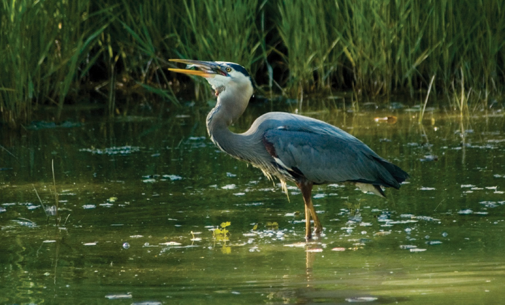

The Great Blue Heron is a large wading bird commonly found along shores and wetlands throughout North America. It is known for its striking blue-gray plumage and its slow, graceful flight. These birds are usually alone, often seen standing in shallow water waiting to catch fish or amphibians.
Herons are often seen as symbols of patience, balance, and wisdom in many Indigenous cultures across North America. They are admired for their stillness and skill in hunting, reflecting values of focus and harmony with nature. In some stories, herons are also messengers or guardians of the water.
Herons face threats from a variety of predators depending on their habitat. Common predators include large birds of prey like eagles and hawks, which may attack adult herons or their chicks. Additionally, mammals such as raccoons and foxes can prey on heron eggs and young birds, especially when they nest in vulnerable areas.